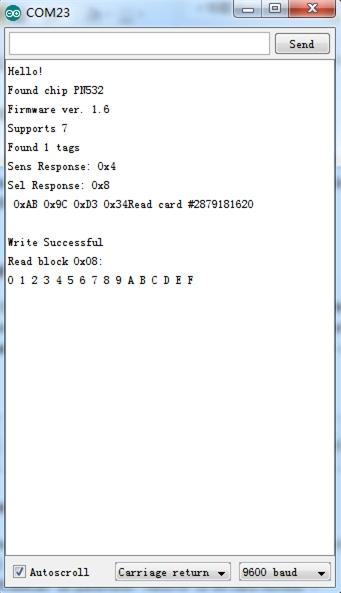

NFC Shield is a Near Field Communication interface for Arduino build around the popular NXP PN532 integrated circuit. NFC is a short-distance radio technology that enables communication between devices that are held close together. NFC traces its roots in RFID technology and is an open platform technology standardized in ECMA-340 and ISO/IEC 18092.
NFC is widely used like RFID to recognize cards/tags (NXP Mifare Cards / Tags). NFC can be used as an alternative to travel card using the read/write memory provided by cards/tags. Few mobile phones comes with NFC inbuilt - they are used as readers of cards, tags, smart posters with a Web URL(like a Mobile QR-Code reader). This technology is also being applied for smart cashless purchases.
Like many other standards, NFC technology is regulated by Near Field Communication Forum which standardizes NFC communication -- how they devices pair, share data and allow a secure transaction to happen.NFC Forum develops and certifies devices compliant with NFC standards.
NFC operate on unlicensed ISM(Industry Scientific Medical) band of 13.56 MHz Frequency. NFC communication range is up to 10 cm. But, this is limited by the antenna and power radiation design. Most devices work within a range of 10mm. NFC Shield antenna is designed to work within a range of 1cm. NFC Shield provides all necessary circuitry for PN532 like 27.12Mhz crystal, power supply.It also beaks-out the I/O pins of PN532 for easy access.
The communication between Arduino and NFC Shield is via SPI.
Model: SLD80453P
Donwload the PN532_SPI Library For NFC Shield and install it to \arduino\libraries. you can either copy the folling codes into Arduino IDE or open Open the examples in the library to start.
Demo 1：Read the complete memory of a MIFARE card
1. Open and upload the example readAllMemoryBlocks example as show below.
//This example reads all MIFARE memory block from 0x00 to 0x63. //It is tested with a new MIFARE 1K cards. Uses default keys for authenication. //Contributed by Seeed Technology Inc (www.seeedstudio.com) #include <PN532.h> #include <SPI.h> /*Chip select pin can be connected to D10 or D9 which is hareware optional*/ /*if you the version of NFC Shield from SeeedStudio is v2.0.*/ #define PN532_CS 10 PN532 nfc(PN532_CS); #define NFC_DEMO_DEBUG 1 void setup(void) { #ifdef NFC_DEMO_DEBUG Serial.begin(9600); Serial.println("Hello!"); #endif nfc.begin(); uint32_t versiondata = nfc.getFirmwareVersion(); if (! versiondata) { #ifdef NFC_DEMO_DEBUG Serial.print("Didn't find PN53x board"); #endif while (1); // halt } #ifdef NFC_DEMO_DEBUG // Got ok data, print it out! Serial.print("Found chip PN5"); Serial.println((versiondata>>24) & 0xFF, HEX); Serial.print("Firmware ver. "); Serial.print((versiondata>>16) & 0xFF, DEC); Serial.print('.'); Serial.println((versiondata>>8) & 0xFF, DEC); Serial.print("Supports "); Serial.println(versiondata & 0xFF, HEX); #endif // configure board to read RFID tags and cards nfc.SAMConfig(); } void loop(void) { uint32_t id; // look for MiFare type cards id = nfc.readPassiveTargetID(PN532_MIFARE_ISO14443A); if (id != 0) { #ifdef NFC_DEMO_DEBUG Serial.print("Read card #"); Serial.println(id); Serial.println(); #endif uint8_t keys[]= { 0xFF,0xFF,0xFF,0xFF,0xFF,0xFF };// default key of a fresh card for(uint8_t blockn=0;blockn<64;blockn++) { if(nfc.authenticateBlock(1, id ,blockn,KEY_A,keys)) //authenticate block blockn { //if authentication successful uint8_t block[16]; //read memory block blockn if(nfc.readMemoryBlock(1,blockn,block)) { #ifdef NFC_DEMO_DEBUG //if read operation is successful for(uint8_t i=0;i<16;i++) { //print memory block Serial.print(block[i],HEX); if(block[i] <= 0xF) //Data arrangement / beautify { Serial.print(" "); } else { Serial.print(" "); } } Serial.print("| Block "); if(blockn <= 9) //Data arrangement / beautify { Serial.print(" "); } Serial.print(blockn,DEC); Serial.print(" | "); if(blockn == 0) { Serial.println("Manufacturer Block"); } else { if(((blockn + 1) % 4) == 0) { Serial.println("Sector Trailer"); } else { Serial.println("Data Block"); } } #endif } } } } delay(2000); }
This sketch reads the complete memory of a MIFARE Standard card using default authentication keys. The output gives typical memory layout of fresh MIFARE Standard card.
2. Bring a Mifare Card near the NFC Antenna. Open the serial monitor, you can see the score as show below:
Note: Blocks are classified as Manufacturer Block(read-only), Data Block (user/application writable area), and Sector Trailer(authentication and access bits for that sector)
Demo 2: Write data to MIFARE Memory Block
1. Open the example writeMifareMemory. This example writes a MIFARE memory block 0x08 of a new MIFARE 1K cards using default authentication keys .Read the Block Memory after complete writing data to MIFARE Memory Block.
Note: Memory block 0 is readonly and contains manufacturer data. Do not write to Sector Trailer block unless you know what you are doing. Otherwise, the MIFARE card may be unusable in the future.
2. Compile and upload the example If you do not know how to upload, please click here.
3. Bring a Mifare Card near the NFC Antenna..
4. Open the serial monitor, you can see the score as show below:

Demo 3: Peer to Peer communication
An experimental NFC Peer to Peer communication is implemented in the latest NFC library. This uses Active Initiator for P2P communication.
1. Download the example “PtoPInitiator” and “PtoPTarge” into two different Arduinos with NFC Shields.
2. Place Antenna close to each other. See hardware setup as below. (图片)
3. Open the serial terminal and observer the data trans-reception.
Output Score:
P2P Initiator:
P2P Target:
The APIs make use of the commands to invoke the interfaces provided by PN532 firmware via SPI. All these commands are documented in PN532 User Manual. The following APIs are provided by PN532_SPI Library.
boolean SAMConfig(void)
This API invokes the SAMConfiguration command of PN532 and sets it to Normal Mode. SAM stands for Security Access Module (i.e the PN532 system). PN532 system can work in Normal mode, Virtual Card mode, Wired Card mode and Dual Card mode.
Usage:
nfc.SAMConfig(); // Call this before any read/write operation
uint32_t readPassiveTargetID(uint8_t cardbaudrate)
This method reads the Passive Target ID and returns it as a 32-bit number. At the moment only reading MIFARE ISO14443A cards/tags are supported. Hence use PN532_MIFARE_ISO14443A as parameter. Returns 32 bit card number
Usage:
uint32_t cid; // look for MiFare type cards/tags cid = nfc.readPassiveTargetID(PN532_MIFARE_ISO14443A);
uint32_t authenticateBlock(uint8_t cardnumber, uint32_t cid, uint8_t blockaddress ,uint8_t authtype, uint8_t * keys)
This method is used to authenticate a memory block with key before read/write operation. Returns true when successful.
Usage:
uint8_t keys[]= {0xFF,0xFF,0xFF,0xFF,0xFF,0xFF}; // default key of a fresh card
nfc.authenticateBlock(1, id ,3,KEY_A,keys); ////authenticate block 3, id is 32-bit passive target id.
uint32_t readMemoryBlock(uint8_t cardnumber,uint8_t blockaddress, uint8_t * block)
This method reads a memory block after authentication with the key. Returns true when successful.
Usage:
uint8_t block[16]; nfc.readMemoryBlock(1,3,block); //Read can be performed only when authentication was successful.
uint32_t writeMemoryBlock(uint8_t cardnumber,uint8_t blockaddress, uint8_t * block)
This method writes data to a memory block after authentication with the key. Returns true when successful.
uint8_t writeBuffer[16];
for(uint8_t ii=0;ii<16;ii++)
{
writeBuffer[ii]=ii; //Fill buffer with 0,1,2....F
}
nfc.writeMemoryBlock(1,0x08,writeBuffer); //Write writeBuffer[] to block address 0x08. Read can be performed only when authentication was successful.
uint32_t PN532::configurePeerAsInitiator(uint8_t baudrate)
This method implements a Peer to Peer Initiator. Returns true when successful.
This feature is experimental and supports NFC Peer to Peer communication with other NFC shields. Interaction with mobile devices are not tested.
Usage:
// Configure PN532 as Peer to Peer Initiator
if( nfc.configurePeerAsInitiator(2) ) //if connection is error-free
{
//Your Send Receive code here
}
uint32_t configurePeerAsTarget()
This method implements a Peer to Peer Target. Returns true when successful.
This feature is experimental and supports NFC Peer to Peer communication with other NFC shields. Interaction with mobile devices are not tested.
Usage:
// Configure PN532 as Peer to Peer Target
if(nfc.configurePeerAsTarget()) //if connection is error-free
{
//You code to trans-receive data
}
uint32_t initiatorTxRx(char *DataOut,char *DataIn)
This method is used to transmit and receive data to and from target. This code is used by NFC Peer to Peer Initiator. Returns true when successful.
This feature is experimental and supports NFC Peer to Peer communication with other NFC shields. Interaction with mobile devices are not tested.
Usage:
// Configure PN532 as Peer to Peer Initiator in active mode
if( nfc.configurePeerAsInitiator(2) ) //if connection is error-free
{
//trans-receive data
if(nfc.initiatorTxRx(DataOut,DataIn))
{
Serial.print("Data Sent and Received: ");
Serial.println(DataIn);
}
}
uint32_t targetTxRx(char *DataOut,char *DataIn)
This method is used to transmit and receive data to and from initiator. This code is used by NFC Peer to Peer Target to respond to Initiator. Returns true when successful.
Usage:
// Configure PN532 as Peer to Peer Target
if(nfc.configurePeerAsTarget()) //if connection is error-free
{
//trans-receive data
if(nfc.targetTxRx(DataOut,DataIn))
{
Serial.print("Data Received: ");
Serial.println(DataIn);
}
}